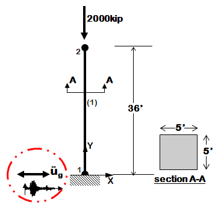

This example demonstrates how to perform time history analysis of a 2D elastic reinforced concrete cantilever column with a gravity load included in the analysis. The column will be exposed only to horizontal component of ground motion. This example is a tutorial for the slightly modified example Ex1a.Canti2D.EQ.tcl (given in the examples manual) and is intended to help OpenSees beginners get started. Geometry of the cantilever column, node and element numbering are shown in the figure below.

Instructions
To execute this analysis in OpenSees download the following files:
- Ex1a.Canti2D.EQ.modif.tcl
- A10000.tcl (ground-motion file)
Place Ex1a.Canti2D.EQ.tcl and `A10000.tcl` file in the same folder with the OpenSees.exe. By double clicking on OpenSees.exe the OpenSees interpreter will pop out. To run the analysis the user should type:
source Ex1a.Canti2D.EQ.modif.tcland hit enter.
Create the model
The model of a structural system is created in the following way:
- Spatial dimension of the model (NDM) and number of degrees-of-freedom (DOF) at nodes are defined using model command.
- Coordinates of the nodes are defined using node command. At this point the user has to choose basic units (e.g., kip, in., sec) and remain consistent while creating the model.
- If dynamic (transient) analysis is performed nodal mass is assigned using either node or mass command. A mass has to be assigned to each degree of freedom.
- The boundary conditions are defined using using single-point
constraint command fix. For
nodes that have some fixity, constraints have to be defined at all
degrees of freedom (
0if unconstrained (or free),1if constrained (or fixed)). Completely free nodes do not have to be defined. - Before element is defined, the geometric transformation of the element has to be defined using geometric transformation command. This command transforms beam element stiffness and resisting force from the basic system to the global-coordinate system. Three types of geometric transformation are available in OpenSees: Linear Transformation, PDelta Transformation, and Corotational Transformation. In a 2D problem, element orientation does not need to be considered, and can be same for all elements.
- The elements are to be defined using one of the elements available in OpenSees. For the purpose of this example Elastic Beam Column Element will be used. Different types of elements require different additional commands for their definition.
For the given example, steps from 1 to 6 are explained below. The link to command description is provided for each command so that a user can see the definition of all the arguments that the command invokes.
-
First we have to define the model builder. The cantilever column is a 2D model with 3 DOFs at each node. Thus, spatial dimension of the model (
ndm) is 2 and number of degrees-of-freedom (ndf) is 3. This is defined in the following way:model BasicBuilder -ndm 2 -ndf 3 -
The column has two nodes, labeled 1 and 2 (as shown in the Figure above). Node 1 has coordinates (0,0) and node 2 has coordinates (0,432) in the global coordinate system \((x,y)\). The basic units chosen to build the model are: kip, in, sec. Note: \(y\) coordinate for node 2 is \(36\times 12=432\) in. Nodes are defined using the node command:
node 1 0. 0. node 2 0. 432. -
The cantilever column is constrained (fixed) at the node 1 in all three DOFs (two translational and one rotation). This boundary condition is defined with fix command.
fix 1 1 1 1 -
Mass is assigned at node 2 using mass command. Since transient analysis is going to be performed for one component of ground motion (horizontal component - x direction) the mass is to be assigned in x direction. The mass is defined as Weight/g=2000/386=5.18. The vertical and rotational mass are set to zero.
mass 2 5.18 0. 0. -
The geometric transformation with id tag 1 is defined to be linear.
geomTransf Linear 1 -
The column is defined to be elastic using elasticBeamColumn element. The element with the id tag 1 will connect nodes 1 and 2. Cross-sectional area of the element is \((5\times 12)^2 =3600\) in2, Young’s modulus of elasticity is \(51000*\sqrt{4000}/1000=3225\) ksi (assuming \(f_c^{\prime}=4000\) psi), and the moment of inertia is \((5\times 12)^4 / 12 =1080000\) in4.
element ElasticBeamColumn 1 1 2 3600 3225 1080000 1
Define recorders
As a user you have an option of specifying the type of output that will be created following the analysis. The OpenSees recorder command is used to define the analysis output. This command is used to generate a recorder object for a specific type of response that is to be monitored during the analysis and its output.
For the considered cantilever column, the displacements of free node, support reactions, lateral drift, end element forces are recorded and stored as text files in “Data” folder.
The node recorder is
used to output displacements of the free node (node 2) and support
reaction of the constrained node (node 1) into files DFree.out and
RBase.out, respectively. Both files will have a time stored in the first
column. The columns 2-4 of file DFree.out will contain displacements at
DOFs 1, 2, and 3. The columns 2-4 of file RBase.out will contain
reactions that correspond to DOFs 1, 2, and 3.
recorder Node -file Data/DFree.out -time -node 2 -dof 1 2 3 disp
recorder Node -file Data/RBase.out -time -node 1 -dof 1 2 3 reaction
The drift recorder is used to output lateral drifts into file Drift.out. The first column of the file is the time, and the second column is the lateral drift (relative displacements between nodes 1 and 2).
recorder Drift -file Data/Drift.out -time -iNode 1 -jNode 2 -dof 1 -perpDirn 2
The element recorder
is used to output global forces of the column into file FCol.out. The
first column of the file is the time. The columns 2-7 of the file will
contain end node forces (shear, axial, and bending moment); 3 forces at
node 1 and 3 forces at node 2. These forces correspond to the global
coordinate axes orientation.
recorder Element -file Data/FCol.out -time -ele 1 force
How to apply the load in OpenSees?
Applying load in OpenSees is a three-step process:
-
Loads are defined using pattern command;
-
Analysis objects (constraint handler, DOF numberer, numerical solver, type of test for convergence, solution algorithm, integrator, and type of analysis to be performed) are defined next;
-
The loads are applied and the analysis is executed using analyze command.
Gravity load analysis
In this example the gravity load is a substructure weight of 2000 kips. It will be applied at node 2 in 10 equal steps in increments of 200kips (0.1*2000). To apply the nodal load incrementally the linear time series with id tag 1 will be used.
timeSeries Linear 1
The time series will be assigned to the load pattern with id tag 1. Nodal load command will be used to create nodal load. It is a load at node 2 in negative Y direction of 2000 kips. The load value is a reference load value, it is the time series that provides the load factor. The load factor times the reference value is the load that is actually applied to the node in one time step of analysis.
pattern Plain 1 1 {load 2 0. -2000. 0. }
The analysis objects are defined next. To construct Constraint Handler object the constraints command is used. The Constraint Handler object determines how the constraint equations (boundary conditions) are enforced in the analysis. In the case of cantilever column with a total fixity (all DOFs are constrained) at the node 1 plain constraints can be used.
constraints Plain
DOF Numberer object, that determines the numbering of degrees of freedom (mapping between equation numbers and degrees-of-freedom) is defined next. Since the model is very simple and small plain numberer will be used:
numberer Plain
To store and solve the system of equations during the analysis BandGeneral solver is used:
system BandGeneral
Since the column is elastic the system of equation can be solved in one iteration. Thus, the linear algorithm will be used to solve the system of equations.
algorithm Linear
Since the analysis is static and specific load (2000 kips) is to be applied, load control integrator will be used in this example. The load factor increment (\(\lambda\) is set to 0.1 since the full load of 2000 kips is to be applied in 10 analysis steps. For the nth step of analysis the load factor is \(\lambda_{n} = \lambda_{n-1} + \lambda\) .
integrator LoadControl 0.1
The type of analysis is next defined using analysis command. The gravity load is a static type of the load and thus we have:
analysis Static
With this all analysis objects are defined, so the analysis can be performed. It is performed by invoking the command analyze and by defining the number of analysis steps to be performed (10 for this example).
analyze 10
Since the transient analysis is going to be performed next, the gravity load has to be maintained constant for the remainder of the analysis and the time has to be restarted (set to 0.0) so that a time for a new time history can start from 0.0. The loadConst command is used for this.
loadConst -time 0.0
The dynamic ground motion analysis
The load pattern for a time history analysis has to be defined first. The load pattern consists of defining an acceleration record of a ground motion that will be applied at the support (node 1). The ground motion used for the analysis is acceleration record from Loma Prieta earthquake (LOMAP) at station CDMG 58373 APEEL 10 - Skyline1 component A10000. This acceleration record is provided at the beginning of this tutorial. The time interval between the points found in the record (dt) is 0.005 and number of data points found in the record (nPts) is 7990. The Path TimeSeries with id tag 2 is used to define the ground motion time series. The acceleration time history of the recorded ground motion is in units of \(G\) and it is thus factored with \(G = 386\) in2/sec.
timeSeries Path 2 -dt 0.005 -filePath A10000.acc -factor $G
The uniform exciatation pattern with id tag 2 will be used to apply this time series (with id tag 2) to a model in x direction (direction 1).
pattern UniformExcitation 2 1 -accel 2
Damping will be assigned to the model using rayleigh command. Rayleigh damping is mass and stiffness proportional. In OpenSees there are three different stiffness matrices available for use: the current stiffness matrix (at each iteration of a time step), the initial stiffness matrix, and the committed stiffness matrix (at the last committed step of analysis). For the linear elastic type of analysis the three matrices are identical. In this example damping is specified to be only stiffness proportional and equal to 2*(damping ratio)/(fundamental frequency). The fundamental frequency is calculated from the first eigenvalue. The damping ratio is set to 0.02.
set freq [expr [eigen -fullGenLapack 1]**0.5]
set dampRatio 0.02
rayleigh 0. 0. 0. [expr 2*$dampRatio/$freq]
The dynamic ground motion analysis is transient type of analysis and therefore some of the analysis components have to be redefined. In order to define new analysis objects the previously defined analysis objects have to be destroyed. For this we will use wipeAnalysis command:
wipeAnalysis
The analysis objects that correspond to transient analysis are defined next. Constraint handler, DOF numberer, numerical solver, and algorithm will be the same as for the static (gravity) analysis.
constraints Plain numberer Plain system BandGeneral algorithm Linear
The integrator and the analysis type are different. Numerical evaluation of the dynamic response will be performed using Newmark method of integration. The parameters \(\gamma\) and \(\beta\) will be set to 0.5 and 0.25, respectively. This choice of \(\gamma\) and \(\beta\) leads to constant average acceleration over a time step. The type of analysis is transient.
integrator Newmark 0.5 0.25 analysis Transient
With this all analysis objects are defined, so the analysis can be
performed. It is performed by invoking the command analyze and by defining the
number of analysis steps to be performed and by defining the analysis
increments. The number of analysis steps is set to 3995 (nPts/2) and the
analysis increment is set to 0.01 (2*dt). Thus every second point in the
record will be skipped during the analysis.
analyze 3995 0.01
Example Provided by: Vesna Terzic, UC Berkeley